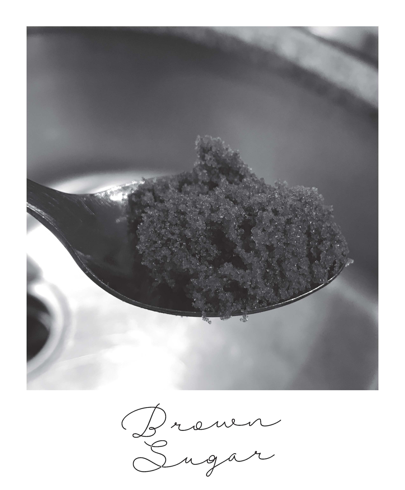
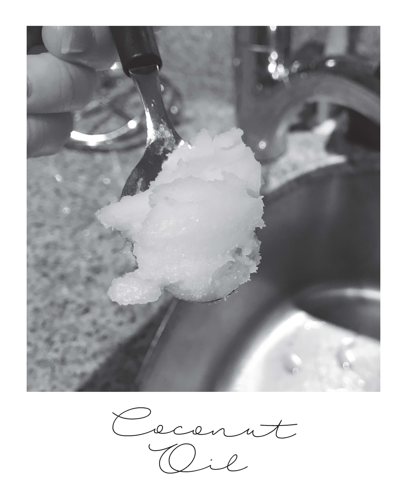

-

-

DIY Brown Sugar Coconut Oil Scrub
Wanna a body scrub that will leave your skin feeling silky smooth?
Published Date September 12, 2017
Silky soft skin doesn't come easy nowadays. Well we have a easy solution for that! Two ingredients and it only takesfive minutes to make, what could be better. Take an afternoon to relax and exfoliate your skin. The brown sugar scrub will leave your skin feeling soft and smooth while the coconut oil is so healthy and won't clog your pores.
Since brown sugar has smaller particles, it is gentler and safer for scrubs. Brown sugar can also be used as an exfoliator on your face or for sensitive skin because it is softer than regular sugars. It is strong enough to scrub away dead skin cells and make way for the healthier, glowing skin to show through.
This all natural, edible oil is inarguably the best moisturizer out there, and the only one you’d ever need. Besides being a highly nutritious and delicious cooking oil, coconut oil contains properties that feed and moisturize the skin.